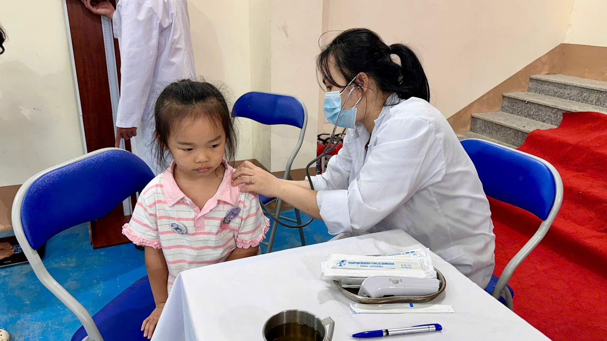
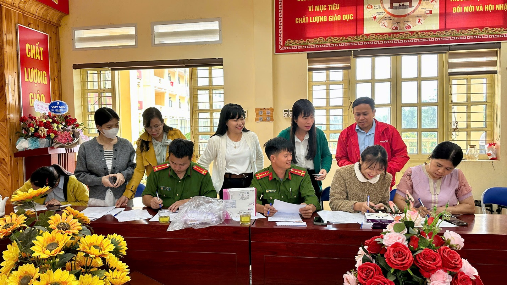
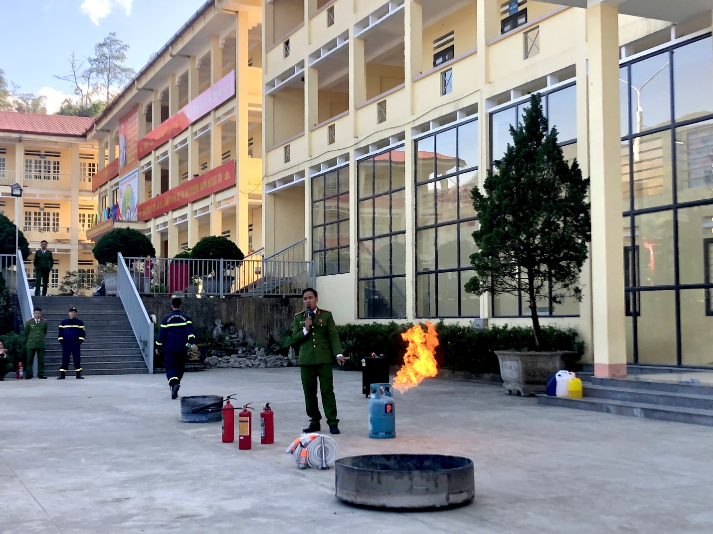
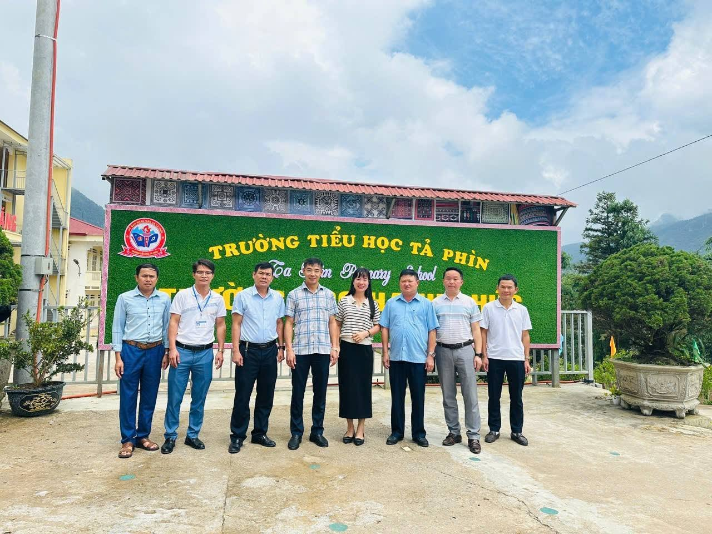
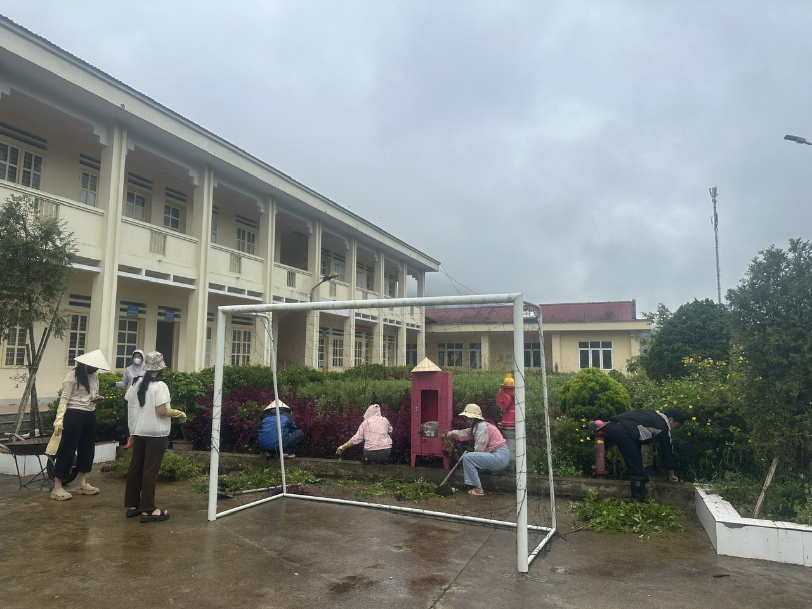

DÂN VẬN KHÉO – NHIỀU CÁNH TAY NỐI DÀI
VÌ HỌC SINH VÙNG CAO
Tại Trường Tiểu Học Tả Phìn
Y Tế Xã
Công An Xã
An Toàn Giao Thông
Chính Quyền Địa Phương
Cha Mẹ Học Sinh
Thông Điệp Khởi Đầu
“Tại Trường Tiểu học Tả Phìn, xã Tả Phìn, tỉnh Lào Cai, chăm lo cho học sinh không chỉ là câu chuyện của những người đứng trên bục giảng. Từ cán bộ y tế, lực lượng công an, cán bộ tuyên truyền an toàn giao thông đến chính quyền địa phương và cha mẹ học sinh, mỗi lực lượng một phần việc, cùng tạo nên một môi trường học tập an toàn, lành mạnh. Những việc làm cụ thể ấy đang cho thấy một cách làm dân vận gần gũi: gần học sinh, gần phụ huynh, gần cộng đồng và cùng hướng đến mục tiêu nâng cao chất lượng giáo dục.”
01
Khi Nhà Trường Không Đi Một Mình
Mỗi ngày đến trường của một học sinh vùng cao là hành trình bắt đầu từ gia đình, đi qua cộng đồng và kết thúc ở lớp học. Vì thế, để các em học tập, rèn luyện và trưởng thành, những gì diễn ra trong lớp học thôi chưa đủ.
Ở Trường Tiểu học Tả Phìn, sự phối hợp giữa nhà trường với các lực lượng tại địa phương được thể hiện bằng những việc làm cụ thể, gắn trực tiếp với cuộc sống của học sinh. Không phải những điều lớn lao, đó có thể là một buổi khám sức khỏe ngay tại trường; một buổi tuyên truyền để các em hiểu hơn về an toàn giao thông; những hướng dẫn về phòng cháy, chữa cháy và kỹ năng cứu nạn, cứu hộ; sự quan tâm, thăm hỏi của chính quyền địa phương hay những ngày cha mẹ học sinh cùng đến trường lao động.
Mỗi hoạt động giải quyết một nhu cầu thiết thực. Nhưng khi đặt cạnh nhau, những việc làm ấy tạo thành một sợi dây liên kết giữa nhà trường – gia đình – chính quyền – các lực lượng xã hội và cộng đồng. Đó cũng là cách “Dân vận khéo” được cụ thể hóa từ những công việc gần gũi nhất.
02
Chăm Lo Cho Học Sinh Từ Những Điều Thiết Thực
Một đứa trẻ muốn học tập tốt trước hết cần có sức khỏe tốt. Với học sinh tiểu học, việc theo dõi, chăm sóc sức khỏe không chỉ giúp phát hiện những vấn đề cần lưu ý mà còn góp phần hình thành cho các em ý thức quan tâm đến chính bản thân mình.
Tại Trường Tiểu học Tả Phìn, cán bộ y tế xã đã phối hợp với nhà trường thực hiện khám sức khỏe cho học sinh. Những chiếc bàn khám, những lượt học sinh được kiểm tra sức khỏe ngay tại trường có thể là hình ảnh rất đỗi bình thường. Nhưng phía sau đó là sự phối hợp giữa hai đơn vị cùng hướng tới một mục tiêu chung: chăm lo tốt hơn cho học sinh.

[ẢNH 1] Cán bộ y tế xã phối hợp với Trường Tiểu học Tả Phìn khám sức khỏe cho học sinh. 452/452 em học sinh được khám sàng lọc sức khỏe ban đầu chu đáo.
Trong công tác giáo dục, có những kết quả không thể đo bằng điểm số. Một học sinh khỏe mạnh, được quan tâm đúng lúc, được thầy cô và gia đình theo dõi, chăm sóc cũng là một điều kiện quan trọng để các em yên tâm học tập. Và để chăm lo cho các em một cách đầy đủ hơn, nhà trường cần đến sự đồng hành của cả cộng đồng.
03
Cùng Xây Dựng Một Môi Trường Học Tập An Toàn
Một môi trường giáo dục tốt không chỉ cần tri thức mà còn phải an toàn. Từ phòng ngừa nguy cơ đến trang bị kỹ năng ứng phó, sự phối hợp với lực lượng công an giúp những kiến thức vốn tưởng như xa với học sinh trở nên gần gũi hơn thông qua những hoạt động trực tiếp tại trường.
Công tác kiểm tra, test ma túy theo kế hoạch đối với đội ngũ giáo viên là một hoạt động thể hiện sự quan tâm đến việc phòng ngừa nguy cơ, góp phần xây dựng môi trường giáo dục an toàn, lành mạnh.

[ẢNH 2] Lực lượng Công an xã phối hợp thực hiện công tác kiểm tra, test ma túy đối với giáo viên tại nhà trường (Kế hoạch Tháng an toàn phòng chống ma túy; kết quả: 100% cán bộ giáo viên không ma túy).
Cũng với mục tiêu bảo đảm an toàn, cán bộ công an hướng dẫn nhà trường và học sinh về công tác phòng cháy, cứu nạn, cứu hộ. Những kiến thức về cách phòng ngừa cháy, cách xử lý khi có tình huống nguy hiểm hay kỹ năng thoát nạn sẽ chỉ thực sự có ý nghĩa khi được truyền đạt bằng những tình huống cụ thể, phù hợp với lứa tuổi.

[ẢNH 3] Cán bộ Công an hướng dẫn nhà trường và học sinh kiến thức, kỹ năng phòng cháy, cứu nạn, cứu hộ.
Từ phòng cháy đến phòng ngừa các nguy cơ khác, điều quan trọng không chỉ là “nói cho học sinh biết”, mà là giúp các em hình thành kỹ năng và ý thức tự bảo vệ mình. Đó là một cách giáo dục thiết thực, trong đó những người làm công tác chuyên môn bên ngoài nhà trường trở thành những người đồng hành cùng thầy cô trong việc bảo vệ học sinh.
04
Từ Cổng Trường Đến Những Con Đường An Toàn
Với học sinh, hành trình đến trường bắt đầu từ ngoài cánh cổng. Bởi vậy, giáo dục an toàn giao thông cũng là một phần không thể tách rời của việc chăm lo cho các em. Những buổi tuyên truyền về an toàn giao thông đưa các quy định, kỹ năng và những điều cần lưu ý khi tham gia giao thông đến gần hơn với học sinh.
[ẢNH 4] Cán bộ giao thông tuyên truyền, hướng dẫn học sinh những kiến thức cần thiết khi tham gia giao thông.
Với trẻ nhỏ, những bài học ấy không chỉ nằm trên trang sách. Đó là cách đội mũ bảo hiểm đúng quy định, đi đúng phần đường, quan sát khi qua đường và biết tự bảo vệ mình trên hành trình đến trường. Khi cán bộ chuyên môn cùng nhà trường trực tiếp giáo dục học sinh, những kiến thức về an toàn trở nên gần gũi và dễ nhớ hơn. Một lần tuyên truyền có thể chỉ diễn ra trong một khoảng thời gian ngắn, nhưng khi được nhắc lại thường xuyên và gia đình cùng đồng hành, những bài học ấy sẽ trở thành nếp sống văn minh.
05
Khi Chính Quyền Và Nhà Trường Cùng Chung Một Trách Nhiệm
Nhà trường là nơi trực tiếp tổ chức dạy học, nhưng giáo dục học sinh luôn gắn với đời sống của địa phương. Sự quan tâm của chính quyền địa phương đối với nhà trường vì thế không chỉ mang ý nghĩa động viên tinh thần. Đó còn là sự hiện diện của cộng đồng trong một lĩnh vực quan trọng: chăm lo cho thế hệ trẻ.

[ẢNH 5] Đồng chí Thào A Sinh (Bí thư xã), đồng chí Vũ Xuân Quý (Chủ tịch UBND xã Tả Phìn) cùng các đồng chí lãnh đạo, chuyên viên phòng văn hóa xã hội thăm, kiểm tra các hoạt động giáo dục và động viên thầy trò Trường Tiểu học Tả Phìn.
Khi chính quyền nắm được những thuận lợi, khó khăn của nhà trường; khi nhà trường chủ động chia sẻ những vấn đề liên quan đến học sinh; khi các lực lượng cùng tìm cách tháo gỡ, khoảng cách giữa nhà trường và cộng đồng được rút ngắn. Đó chính là một biểu hiện cụ thể của phương châm gần dân, lắng nghe dân và giải quyết những vấn đề thiết thực của người dân.
06
Những Bàn Tay Từ Gia Đình
Nếu các lực lượng bên ngoài là những cánh tay nối dài hỗ trợ nhà trường, thì cha mẹ học sinh chính là những người đồng hành gần gũi nhất với mỗi đứa trẻ. Một cuộc họp phụ huynh không chỉ là dịp nhà trường thông báo tình hình học tập. Đó còn là cơ hội để giáo viên và cha mẹ cùng trao đổi về việc học, việc rèn luyện và những vấn đề của học sinh.
[ẢNH 6] Cha mẹ học sinh tham gia họp, trao đổi cùng nhà trường về việc học tập và rèn luyện của con em.
Sự phối hợp ấy càng có ý nghĩa ở địa bàn vùng cao, nơi việc duy trì việc học của trẻ cần sự đồng hành thường xuyên từ gia đình và nhà trường. Vận động học sinh đi học chuyên cần, duy trì sĩ số không thể chỉ thực hiện bằng lời nhắc nhở trong lớp. Thầy cô cần đến gần gia đình, hiểu hoàn cảnh của từng học sinh, lắng nghe những khó khăn của cha mẹ và cùng tìm cách tháo gỡ.

[ẢNH 7] Cha mẹ học sinh cùng tham gia lao động, góp sức xây dựng môi trường học tập của nhà trường.
Những công việc ấy có thể không xuất hiện trong bảng thành tích. Nhưng với một ngôi trường, mỗi ngày công của phụ huynh là một biểu hiện cụ thể của sự đồng hành. Khi cha mẹ trực tiếp góp sức cho trường lớp, học sinh cũng nhìn thấy một bài học khác – bài học về trách nhiệm với cộng đồng, về sự sẻ chia và về việc mỗi người đều có thể đóng góp một phần nhỏ bé để nơi mình sống trở nên tốt đẹp hơn.
07
Từ Sự Kết Nối Đến Những Thay Đổi Bền Vững
“Dân vận khéo” trong trường học không nhất thiết phải bắt đầu bằng những chương trình lớn. Nó có thể bắt đầu từ một giáo viên chịu khó tìm đến gia đình học sinh; từ một cuộc trao đổi thẳng thắn với phụ huynh; từ cán bộ y tế đến trường chăm sóc sức khỏe cho các em; từ lực lượng công an hướng dẫn kỹ năng phòng cháy, cứu nạn; từ cán bộ giao thông giúp học sinh hiểu cách bảo vệ mình trên đường; từ chính quyền dành thời gian đến thăm, nắm tình hình nhà trường; hay từ những phụ huynh cùng bỏ công sức lao động vì môi trường học tập của con.
Điểm chung của những việc làm ấy là sự gần gũi và thiết thực. Nhà trường không đứng ngoài cộng đồng. Cộng đồng cũng không đứng ngoài giáo dục. Mỗi lực lượng có một vai trò khác nhau, nhưng khi cùng hướng về học sinh, những phần việc riêng lẻ sẽ tạo thành một mạng lưới đồng hành.
Thông Điệp Cốt Lõi
NHIỀU CÁNH TAY – MỘT MỤC TIÊU
Y tế
Chăm sóc sức khỏe học sinh chu đáo.
Công an
Xây dựng môi trường giáo dục an toàn, lành mạnh.
Giao thông
Trang bị kiến thức, kỹ năng tham gia giao thông.
Chính quyền
Đồng hành, nắm tình hình và quan tâm sâu sát.
Cha mẹ học sinh
Phối hợp giáo dục, góp sức dựng xây trường lớp.
Nhà trường
Kết nối, lắng nghe, vận động và tổ chức thực hiện.
Ở vùng cao, mỗi học sinh đến trường là niềm vui của gia đình, của thầy cô và cũng là niềm vui của cộng đồng. Bởi vậy, nâng cao chất lượng giáo dục không chỉ nằm ở những bài học trên lớp. Đó còn là quá trình xây dựng một môi trường trong đó học sinh được quan tâm, được bảo vệ, được lắng nghe và có điều kiện phát triển.
Một cán bộ y tế góp một phần. Một cán bộ công an góp một phần. Một cán bộ giao thông góp một phần. Chính quyền góp một phần. Thầy cô góp một phần. Cha mẹ học sinh góp một phần. Những phần việc ấy gặp nhau ở một điểm chung: vì học sinh.
Và khi nhà trường biết kết nối những “cánh tay” ấy, cánh cổng trường không còn là ranh giới giữa nhà trường với cộng đồng. Một trường học có thể có những bức tường bao quanh, nhưng để tạo nên một môi trường giáo dục tốt đẹp, cần rất nhiều cánh tay cùng chung sức. Đó là sức mạnh của sự đồng hành. Đó cũng là giá trị thiết thực của “Dân vận khéo” trong giáo dục vùng cao.